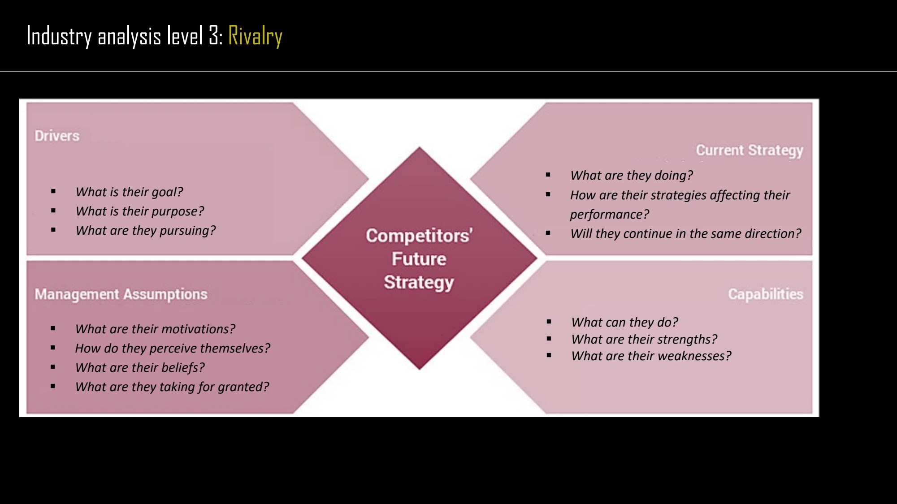

The framework
| Corner | Questions from the framework | What it reveals |
|---|---|---|
| Drivers | What are its goals, purpose and priorities? | The outcomes it is motivated to pursue. |
| Management assumptions | How does it perceive itself and its environment? What does it take for granted? | The beliefs through which managers interpret events. |
| Current strategy | What is it doing? How is that affecting performance? | The pattern of actions already underway. |
| Capabilities | What can it do? What are its strengths and weaknesses? | The feasible responses available to it. |
Key distinctions
Distinguish intention from ability
A competitor may want to respond but lack the required capabilities; it may possess resources without seeing a reason to use them. Keeping the four corners separate prevents a single observation, such as a strong product, from becoming a complete prediction.
Connect to customer analysis
The adjacent course material asks who customers are, what they want, when they buy and how they choose among products. A competitor response only matters strategically in relation to the customers and market decisions being examined.
How to use it
- Record current evidence under each corner.
- Explain how the four perspectives jointly support a proposed response.
- Identify what new evidence would change that interpretation.
Keep in mind
The framework structures an inference about future behavior. It does not provide direct access to management beliefs or establish certainty.
Why are management assumptions distinct from drivers?
Reveal the explanation
Drivers concern desired outcomes; assumptions concern how the competitor interprets itself and the world.
Read the classroom original
Complete pages from the supplied lecture slides. Select a page to read, enlarge or browse its extracted text. Page numbers refer to the PDF’s physical page order.
